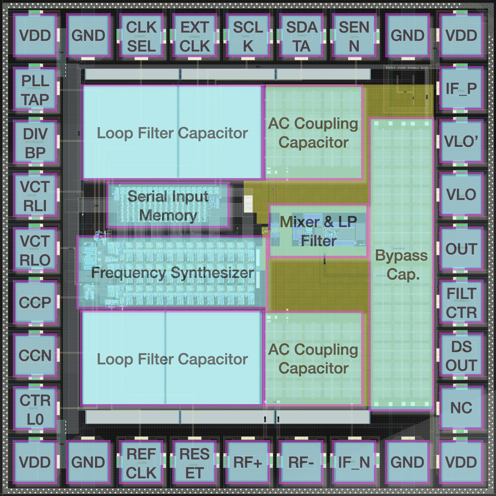

Philadelphia, Pennsylvania | zo44@seas.upenn.edu | 480-875-9018
This is the project of our tape-out course Chips-Design. In this course, we had the opportunity to design our own chip and send it for fabrication (tape-out). This is a project of a group of 2, and I am responsible for the design of the PLL frequency synthesizer and the serial input parallel output memory to configure the freqeuency synthesizer. The PLL frequency synthesizer is designed to generate a frequency range from 1 Mhz to 600 MHz.

The most difficult part of this project is to validate the chip using simulation. Since the PLL will needs 1 ms to lock and the output frequency is at 600 MHz, which means we need to simulate for a long time with a very short step size. The time as well as the resources on server are not allowed to simulate the whole system, so we need to make a plan to validate our chip. After talking with our professor, we deicide to seperqte each component seperately and validate them one by one. When validating the whole system, we use ideal parts to simplify the simulation, e.g. we use ideal dividers to replace our real dividers. This can help us to save a lot of time and resources.